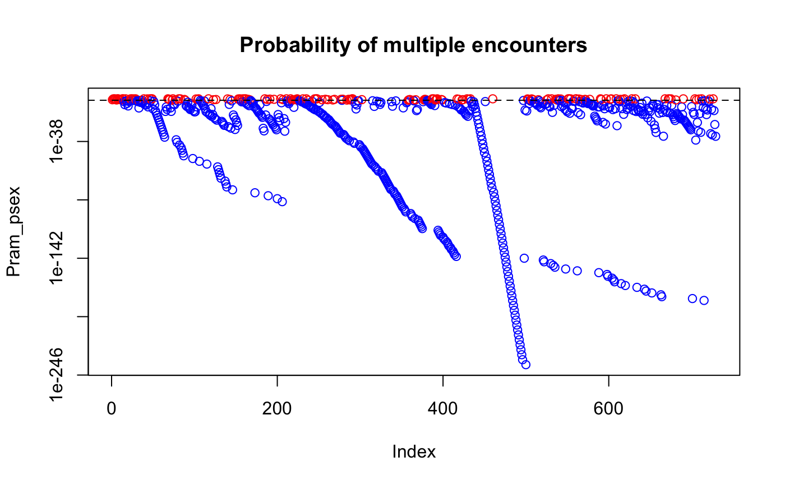

Probability of encountering a genotype more than once by chance
psex(gid, pop = NULL, by_pop = TRUE, freq = NULL, G = NULL, method = c("single", "multiple"), ...)
| gid | a genind or genclone object. |
|---|---|
| pop | either a formula to set the population factor from the
|
| by_pop | When this is |
| freq | a vector or matrix of allele frequencies. This defaults to
|
| G | an integer vector specifying the number of observed genets. If NULL,
this will be the number of original multilocus genotypes for
|
| method | which method of calculating psex should be used? Using
|
| ... | options from correcting rare alleles. The default is to correct allele frequencies to 1/n |
a vector of Psex for each sample.
pgen for its calculation). For a given value of alpha (e.g.
alpha = 0.05), genotypes with psex < alpha can be thought of as a single
genet whereas genotypes with psex > alpha do not have strong evidence that
members belong to the same genet (Parks and Werth, 1993).
method = "multiple", the method from Arnaud-Haond et al. (1997)
is used where the sum of the binomial density is taken.
$$
p_{sex} = \sum_{i = n}^N {N \choose i} \left(p_{gen}\right)^i\left(1 - p_{gen}\right)^{N - i}
$$
where N is the number of sampling units i is the ith - 1
encounter of a given genotype, and pgen is the value of pgen for
that genotype. This procedure is performed for all samples in the data.
For example, if you have a genotype whose pgen value was 0.0001, with 5
observations out of 100 samples, the value of psex is computed like so:
dbinom(0:4, 100, 0.0001)
G for single or multiple encounters. With
method = "single", G takes place of the exponent, whereas
with method = "multiple", G replaces N (see above).
If you supply a named vector for G with the population names and
by_pop = TRUE, then the value of G will be different for each
population.
For example, in the case of method = "multiple", let's say you have
two populations that share a genotype between them. The size of population
A and B are 25 and 75, respectively, The values of pgen for that genotype
in population A and B are 0.005 and 0.0001, respectively, and the number of
samples with the genotype in popualtions A and B are 4 and 6, respectively.
In this case psex for this genotype would be calculated for each population
separately if we don't specify G:
psexA = dbinom(0:3, 25, 0.005) psexB = dbinom(0:5, 75, 0.0001)If we specify
G = 100, then it changes to:
psexA = dbinom(0:3, 100, 0.005) psexB = dbinom(0:5, 100, 0.0001)We could also specify G to be the number of genotypes observed in the population (let's say A = 10, B = 20)
psexA = dbinom(0:3, 10, 0.005) psexB = dbinom(0:5, 20, 0.0001)
Unless freq is supplied, the function will automatically calculate
the round-robin allele frequencies with rraf and G
with nmll.
The values of Psex represent the value for each multilocus genotype.
Additionally, when the argument pop is not NULL,
by_pop is automatically TRUE.
Arnaud-Haond, S., Duarte, C. M., Alberto, F., & Serrão, E. A. 2007. Standardizing methods to address clonality in population studies. Molecular Ecology, 16(24), 5115-5139.
Parks, J. C., & Werth, C. R. 1993. A study of spatial features of clones in a population of bracken fern, Pteridium aquilinum (Dennstaedtiaceae). American Journal of Botany, 537-544.
pgen, rraf, rrmlg,
rare_allele_correction
data(Pram) # With multiple encounters Pram_psex <- psex(Pram, by_pop = FALSE, method = "multiple") plot(Pram_psex, log = "y", col = ifelse(Pram_psex > 0.05, "red", "blue"))abline(h = 0.05, lty = 2)title("Probability of multiple encounters")# NOT RUN { # For a single encounter (default) Pram_psex <- psex(Pram, by_pop = FALSE) plot(Pram_psex, log = "y", col = ifelse(Pram_psex > 0.05, "red", "blue")) abline(h = 0.05, lty = 2) title("Probability of second encounter") # This can be also done assuming populations structure Pram_psex <- psex(Pram, by_pop = TRUE, method = "multiple") plot(Pram_psex, log = "y", col = ifelse(Pram_psex > 0.05, "red", "blue")) abline(h = 0.05, lty = 2) title("Probability of multiple encounters\nwith pop structure") # The above, but correcting zero-value alleles by 1/(2*rrmlg) with no # population structure assumed # Type ?rare_allele_correction for details. Pram_psex2 <- psex(Pram, by_pop = FALSE, d = "rrmlg", mul = 1/2, method = "multiple") plot(Pram_psex2, log = "y", col = ifelse(Pram_psex2 > 0.05, "red", "blue")) abline(h = 0.05, lty = 2) title("Probability of multiple encounters\nwith pop structure (1/(2*rrmlg))") # We can also set G to the total population size (G <- nInd(Pram)) Pram_psex <- psex(Pram, by_pop = TRUE, method = "multiple", G = G) plot(Pram_psex, log = "y", col = ifelse(Pram_psex > 0.05, "red", "blue")) abline(h = 0.05, lty = 2) title("Probability of multiple encounters\nwith pop structure G = 729") # Or we can set G to the number of unique MLGs (G <- rowSums(mlg.table(Pram, plot = FALSE) > 0)) Pram_psex <- psex(Pram, by_pop = TRUE, method = "multiple", G = G) plot(Pram_psex, log = "y", col = ifelse(Pram_psex > 0.05, "red", "blue")) abline(h = 0.05, lty = 2) title("Probability of multiple encounters\nwith pop structure G = nmll") ## An example of supplying previously calculated frequencies and G # From Parks and Werth, 1993, using the first three genotypes. # The row names indicate the number of samples found with that genotype x <- " Hk Lap Mdh2 Pgm1 Pgm2 X6Pgd2 54 12 12 12 23 22 11 36 22 22 11 22 33 11 10 23 22 11 33 13 13" # Since we aren't representing the whole data set here, we are defining the # allele frequencies before the analysis. afreq <- c(Hk.1 = 0.167, Hk.2 = 0.795, Hk.3 = 0.038, Lap.1 = 0.190, Lap.2 = 0.798, Lap.3 = 0.012, Mdh2.0 = 0.011, Mdh2.1 = 0.967, Mdh2.2 = 0.022, Pgm1.2 = 0.279, Pgm1.3 = 0.529, Pgm1.4 = 0.162, Pgm1.5 = 0.029, Pgm2.1 = 0.128, Pgm2.2 = 0.385, Pgm2.3 = 0.487, X6Pgd2.1 = 0.526, X6Pgd2.2 = 0.051, X6Pgd2.3 = 0.423) xtab <- read.table(text = x, header = TRUE, row.names = 1) # Here we are expanding the number of samples to their observed values. # Since we have already defined the allele frequencies, this step is actually # not necessary. all_samples <- rep(rownames(xtab), as.integer(rownames(xtab))) xgid <- df2genind(xtab[all_samples, ], ncode = 1) freqs <- afreq[colnames(tab(xgid))] # only used alleles in the sample pSex <- psex(xgid, by_pop = FALSE, freq = freqs, G = 45) # Note, pgen returns log values for each locus, here we take the sum across # all loci and take the exponent to give us the value of pgen for each sample pGen <- exp(rowSums(pgen(xgid, by_pop = FALSE, freq = freqs))) res <- matrix(c(unique(pGen), unique(pSex)), ncol = 2) colnames(res) <- c("Pgen", "Psex") res <- cbind(xtab, nRamet = rownames(xtab), round(res, 5)) rownames(res) <- 1:3 res # Compare to the first three rows of Table 2 in Parks & Werth, 1993 # }